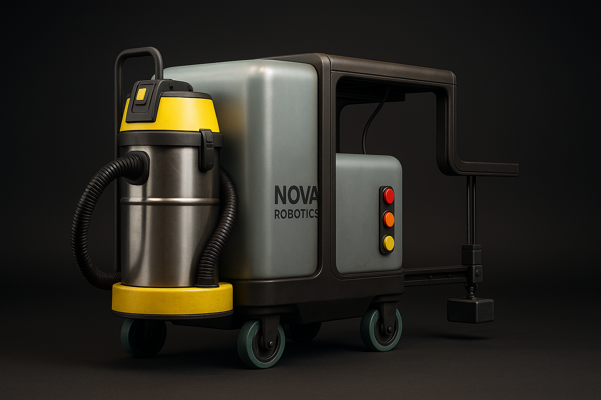
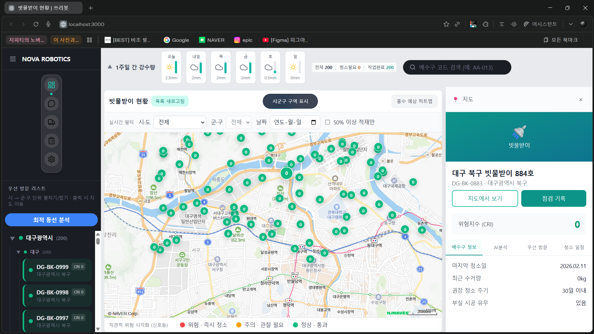
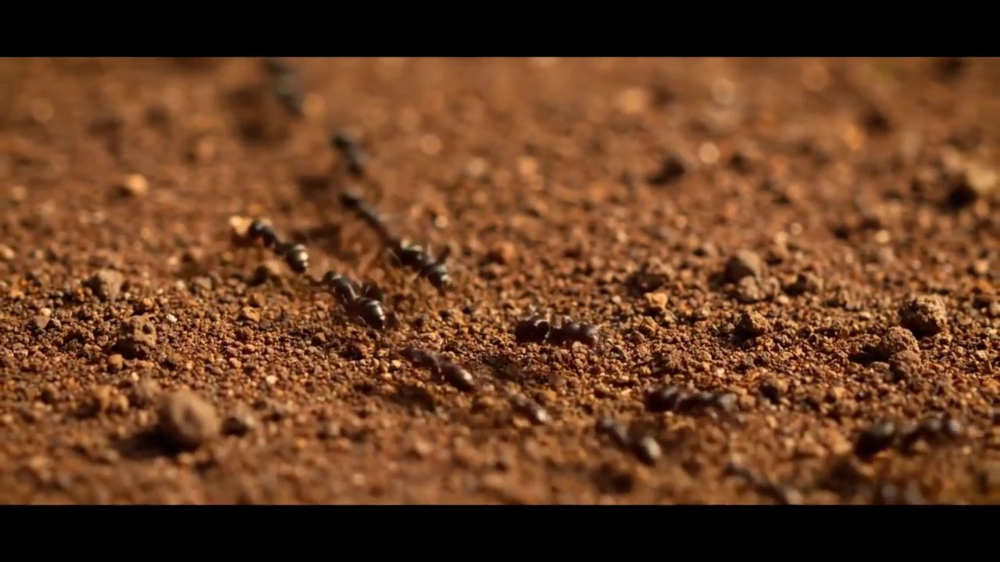

PORTFOLIO · 2026
모르는 분야도 구조를 파악해
결과물로 끝내는 엔지니어입니다

PORTFOLIO · 2026
모르는 분야도 구조를 파악해
결과물로 끝내는 엔지니어입니다
전자공학·창업·AI 자동화를 거치며
하드웨어 설계부터 서비스 운영까지 직접 해왔습니다.
하드웨어
STM32 · ESP32 · 회로 설계 · FSM 펌웨어 · IoT 센서
소프트웨어
Python · FastAPI · React · Next.js · Flutter
AI · 자동화
YOLOv8 · Claude API · Gemini API · 멀티에이전트 · Playwright
#관심
Keyword
도심 집중호우 시 빗물받이 막힘이 침수의 주요 원인. 기존 방식은 수동 순찰·민원 접수로 사후 대응만 가능했습니다. STM32 기반 FSM 펌웨어로 청소 로봇을 제어하고, FastAPI + PostgreSQL + Docker 백엔드와 Naver Maps + GeoJSON 기반 웹 대시보드까지 전 구간을 1인 개발했습니다.
"모르는 분야라도 구조를 이해하면 결국 만들 수 있다"는 걸 이 프로젝트로 확인했습니다.


#경험
Keyword
고속도로와 휴게소를 배경으로 한 56초 공모전. 스토리보드 → 미드저니 이미지 → Kling/Veo3 동영상 → GPT-4 내레이션 → 다빈치 편집까지 AI 도구 6개를 파이프라인으로 연결해 대상을 수상했습니다. 개미가 길을 만드는 것처럼, AI 도구들을 이어 붙여 작품을 완성하는 과정이었습니다.
"AI를 쓰는 게 아니라 AI를 설계하는 방식으로 접근했습니다. 그 차이가 결과를 만들었습니다."

#습관
Keyword
InMoov 오픈소스 휴머노이드의 머리 부분(i2Head)만을 활용해 AI 면접관 인터페이스를 구현하는 프로젝트. 서보 17개로 눈동자·눈썹·입술을 제어해 감정 표현을 구현하고, FastAPI 브릿지를 통해 Claude API로 면접 질문을 생성·응답합니다.
"'로봇 구현'이 목표가 아니라 '면접관처럼 느껴지는 인터페이스' 구현이 목표입니다."


THANK YOU
관심에서 시작해 경험으로 증명하고
습관으로 만들어가겠습니다
© 2026 박세준. All rights reserved.